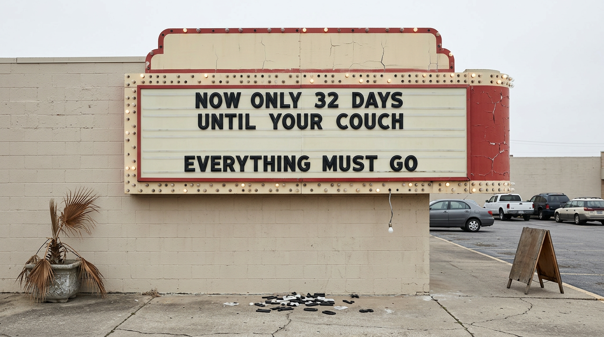

AI Isn't Killing Cinema. We Drove the Stake in Ourselves, Twenty Years Ago, and Then We Went Back for the Acid.
Cinema isn't dead. It's out of whack. There is a difference and the difference is the whole argument.
But right now we're putting an enormous amount of weight on BIG BAD AI — specifically on creatives and what they make. The rule from the peanut gallery is simple and it is applied with a boot: if a thing has AI in it, or AI so much as breathed near it, the thing dies. Publicly. Along with whoever made it.
Did you like it? Did it work? Did you feel anything sitting there?
Doesn't matter. Wrong question. Next.
And the rallying cry, the whole Chicken Little routine, is AI is killing cinema.
Okay. Let's do the autopsy properly, because I have the coroner's report right here and the time of death does not line up.
STOP.
Before the anecdotes, before I get misty about 1993, here are the numbers. I want them load-bearing, not decorative.
US and Canadian ticket sales peaked in 2002 at roughly 1.6 billion admissions — about five movies a year for every person alive in the territory. By 2019, before the pandemic, before anybody outside a research lab could name a generative model, we were down to just over 1.2 billion. That's a quarter of the audience gone while everything was supposedly fine. In 2025 the figure was 769.2 million.
Less than half of peak. And revenue, adjusted, went from about $16.4 billion at the 2002 high to roughly $9 billion in 2024.
Twenty-three years of decline. Generative AI has been a consumer-facing thing for about three of them.
So no. Whatever is on the table, it did not die last Tuesday because somebody used a diffusion model on a matte painting.
What an Event Used to Feel Like
In 1993 I saw Jurassic Park and it rewired me. That is the movie that made me want to make movies.
For five months afterward I hummed the score. All day. Continuously. Enough that my teachers phoned my parents because they believed, sincerely, that something was wrong with me. That I had gone soft in the head. Waiting for the VHS was a physical ailment.
Four years later, The Lost World. I was there opening day, in the rain, having queued since four in the morning the previous day just to get tickets. The Phantom Menace — same drill, same weather, same idiot enthusiasm. Fight Club — you bet. At least once a month my friends and I lined up in whatever the sky was doing to see the next big thing.
Here is the part that matters: The Lost World isn't very good. I knew it wasn't very good roughly forty minutes in. It did not cost me one second of regret about the rain, because I hadn't queued for a film.
I'd queued for an event. A cultural maelstrom. A thing that was happening whether or not I showed up, and I was not going to be the guy who missed it.
That's the product. That was always the product. The movie was the excuse.
Then We Put the Magic on Clearance
So what happened to it?
We sold it. Cheerfully, at volume, in installments, for twenty years.
Streaming arrived and the content firehose opened. Great actors started turning up in slop that goes straight to a tile on a menu screen. Everything became available, immediately, forever, which sounds like paradise and turns out to be the specific mechanism by which nothing feels like anything.
And then there's the window. You said three months. It's worse than that.
The average gap between theatrical release and digital home release is now about 32 days. In a study of 182 US releases through 2025, seventy percent hit premium VOD within 35 days. In the early 2000s that gap was ninety days.

Think about what that teaches a person. It teaches them, correctly, that waiting five weeks costs them nothing except the ability to talk about it at work. We ran a two-decade training program instructing the audience that patience is free, and then we act wounded that they learned the lesson.
The Empty Room and the One That Wasn't
Last week I went to the movies and the place was hollow. Rows of seats doing nothing.
One screen in that building was full: Hoppers, from Pixar. And it wasn't a fluke — the thing opened to $46 million domestic and $88 million globally, which in the current climate is a small miracle wearing a bug costume.
Why that one?
Because kids still believe. For a seven-year-old, going to the movies is still an event — the whole apparatus of it, the loud room, the too-big drink, the being-out-past-normal of it. And for the parents in those seats, it's a chance to reach back and touch a feeling they used to have on their own account.
That's the entire tell. The only reliably full room in the building was the one where somebody still thought it was an occasion.
I overheard a kid outside a Fantastic Four screening telling her friends she'd bought tickets a week early because "I bet it's going to be packed." Her friends snickered when it wasn't. That snicker is worth more than any analyst report. It's the sound of a cultural expectation collapsing in real time, in a lobby, among teenagers.
Now the Part That Complicates My Own Argument
I'd be doing the thing I'm accusing everyone else of if I didn't say this out loud:
The domestic box office has posted its strongest start since COVID. Project Hail Mary took an $80 million debut. Summer projections ran past $4.2 billion. Trades have been running actual comeback pieces with actual executives exhaling in them.
So am I wrong?
No — and look at what rebounded. Not volume. Not the healthy mid-budget middle. It came back on the back of a handful of genuine events: a Nolan picture, a Spider-Man, a big swing science fiction thing with a movie star in it that people organized a Saturday around.
The rebound is the thesis with a bow on it. When something is an occasion, people still get in the car. When it's content, they wait 32 days. The audience never stopped wanting the maelstrom. They stopped believing you were selling one.
So Where Does AI Actually Fit
Here's my honest read.
AI didn't kill cinema. AI is an accelerant poured on a structure we'd already been soaking for twenty years — and it's going to make everything that was already happening happen faster and harder in both directions.
More slop, faster. Unquestionably. The floor drops out, the tile-menu content becomes infinitely cheap, and the flood we're already drowning in gets a second flood on top.
And also: the thing that made me stand in the rain for a bad dinosaur sequel becomes possible for people who could never have afforded it. The cost of swinging big collapses — and when those bets stop landing, somebody in a bedroom gets to make the maelstrom now.
Which one wins depends entirely on whether anybody remembers that the product was never the movie. It was the event. It was five months of humming a John Williams score until your teacher calls your mother.
You cannot generate that. You can only earn it, and then you have to be disciplined enough not to sell it off in thirty-two-day increments.
Curb-stomping a piece of work because AI touched it doesn't protect any of this. It just means nobody's watching the actual exits.
Quick Questions From the Cheap Seats
Is AI killing cinema?
The timeline says no. US ticket sales peaked in 2002 at about 1.6 billion and had already fallen to 1.2 billion by 2019 — before the pandemic and before generative AI was publicly available. The 2025 figure was 769 million. Whatever caused a 23-year decline, it wasn't a technology that went mainstream three years ago.
How long is the theatrical window now?
About 32 days on average between theatrical release and premium VOD. An analysis of 182 US releases in 2025 found 70% reached PVOD within 35 days. In the early 2000s the standard gap was roughly 90 days.
How many movie tickets are sold now versus the peak?
769.2 million in 2025, against roughly 1.6 billion at the 2002 peak — under half. Inflation-adjusted box office revenue fell from about $16.4 billion to around $9 billion over the same span.
Is the box office recovering in 2026?
Yes, partially. 2026 posted the strongest start since the pandemic, led by a small number of true event releases rather than by broad volume. The recovery is concentrated at the top, which is a different thing from a healthy industry.
Did Pixar's Hoppers do well?
It opened to about $46 million domestically and $88 million worldwide — one of the stronger animated openings in a soft market, and a decent argument that the family audience still treats theatrical as an occasion.
Rant over. Never sorry.
Somewhere out there a kid is humming a score and driving her teachers insane. That kid is the entire industry's actual balance sheet.
Stop optimizing her out.